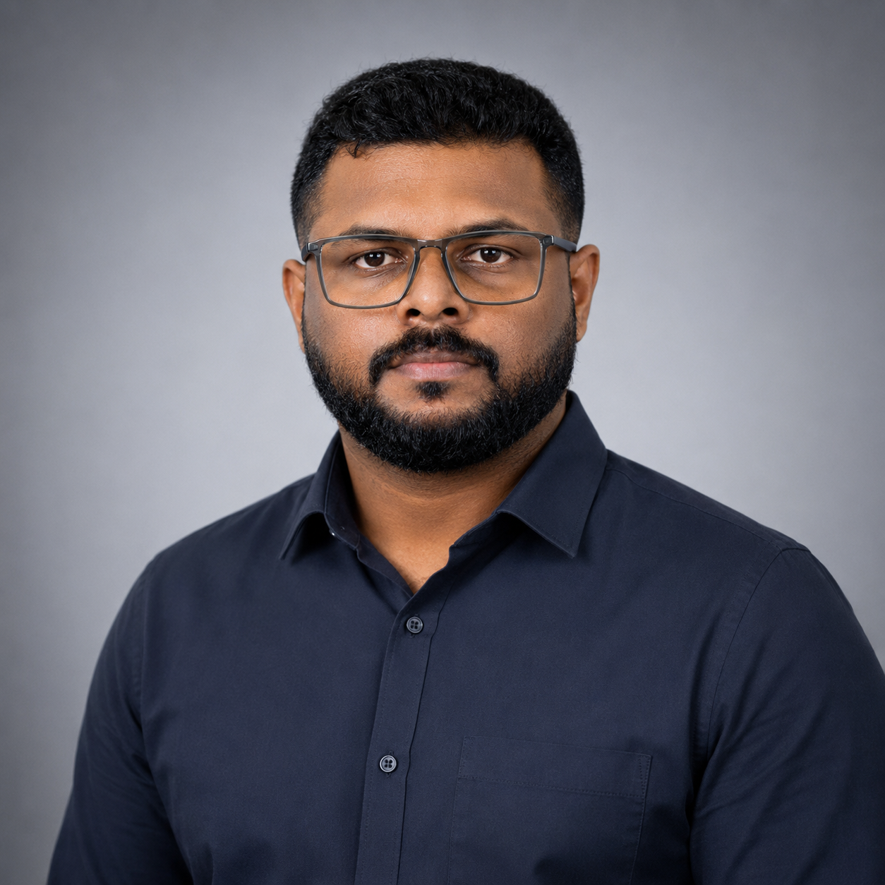

EDUCATION01 / 05
JGE-2
International School.
UAE
9e GlobalASWIN PRAKASH

I’m Aswin, a Structural BIM Modeler in Dubai. I combine LOD 350–400 Revit delivery with coordination, construction documentation, and in-house automation.
From model setup to construction issue.
UAE
9e GlobalUAE
9e GlobalRas Al Khaimah, UAE
9e GlobalDubai, UAE
9e GlobalTrivandrum, India
ULCCSTools built around real delivery work.
In-house tools for documentation, quality control, and repeatable Revit workflows — alongside a structural element detection prototype.
Batch PDF/DWG export, sheet register CSV export, and smart sheet creation.
Cross-checks Bluebeam PDF markups against Revit Mark parameters to catch mismatches before issue.
Populates beam reinforcement schedules from marked-up PDFs, paired with bulk Mark renaming.
Finds every plan view referencing a section’s elements and bulk-hides them in chosen views.
Adjusts view ranges across views in one step.
AI-assisted automation for copying shared parameters between models and scripting submission folders.
Mirrors folder structures and sorts files by drawing code.
Reads structural PDFs with a vision model and outputs detected elements as JSON.
I’m a Structural BIM Modeler with 7+ years in AEC, progressing from structural drafting to LOD 350–400 Revit modeling on UAE projects.
At 9e Global in Dubai, I deliver structural models, GA drawings and reinforcement documentation for schools and residential developments, working to client BIM requirements and ISO 19650-style information naming.
I also build in-house tools with pyRevit, IronPython, Python and C# to support documentation, quality control and sheet export. My focus is bringing model quality, coordination discipline and digital-delivery tooling to structural engineering teams in the Middle East.
Drafting, BIM delivery, and automation.
Jun 2025 — Present
9e Global · Dubai, UAE
Lead structural BIM delivery on JGE-2 International School, DHRE Palm Springs, Al Marjan World and Horizon English School, taking Revit Structure models from setup to issue at LOD 350–400.
Aug 2022 — May 2025
ULCCS · Kerala, India
Core member of the BIM implementation programme, helping project teams move from CAD to Revit-based delivery. Led development of a company-wide Revit template, gathering team requirements and setting families, view templates and standards.
Mar 2018 — Jul 2022
Structural Draughtsman · ULCCS
Produced detailed structural drawings and 3D models for building and infrastructure projects. Prepared and revised drawings against engineer markups, building the detailing foundation for the move into BIM.
Author. Coordinate. Document. Automate.
Government ITI Vatakara, Kozhikode · 2014–2016
Structural and architectural drafting.
Studio 4 BIM Consultancy, delivered at ULCCS.
Interested in structural BIM delivery, coordination, and digital-delivery opportunities with engineering teams in the Middle East.